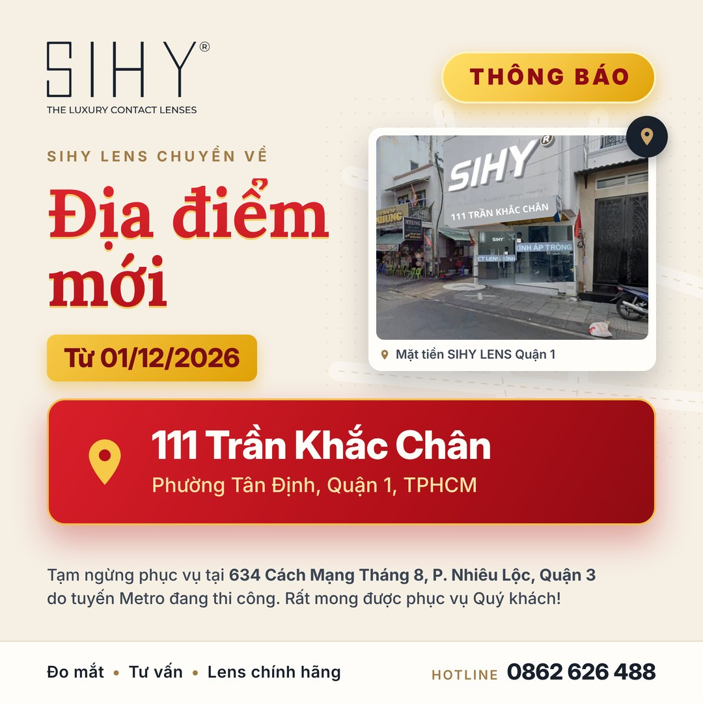
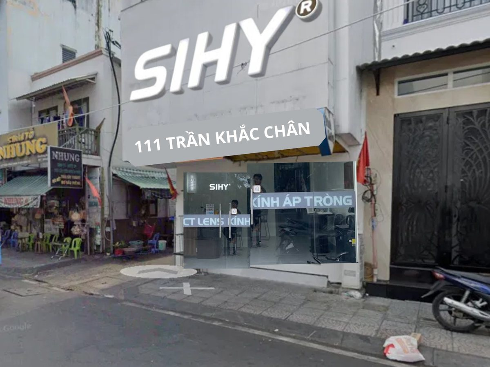

Thông báo: Từ 01/12/2026 SIHY LENS phục vụ khách tại địa điểm mới 111 Trần Khắc Chân, Quận 1
Từ ngày 01/12/2026, SIHY LENS đón khách đo mắt và mua lens tại địa điểm mới 111 Trần Khắc Chân, Phường Tân Định, Quận 1, TPHCM. Cửa hàng 634 Cách Mạng Tháng 8, Quận 3 tạm ngừng phục vụ do thi công tuyến Metro. Hotline vẫn là 0862 626 488.

SIHY LENS trân trọng thông báo tới Quý khách hàng: từ ngày 01/12/2026, SIHY LENS sẽ phục vụ khách hàng tại địa điểm mới 111 Trần Khắc Chân, Phường Tân Định, Quận 1, TPHCM. Quý khách có thể ghé trực tiếp để đo mắt, được tư vấn chọn lens và mua lens chính hãng như trước đây.
Địa điểm mới từ 01/12/2026111 Trần Khắc Chân, Phường Tân Định, Quận 1, TPHCM
Hotline/Zalo (giữ nguyên)0862 626 488
Tạm ngừng phục vụ634 Cách Mạng Tháng 8, Phường Nhiêu Lộc, Quận 3
Vì sao SIHY LENS chuyển địa điểm?
Tuyến đường Metro đang thi công trên khu vực đường Cách Mạng Tháng 8, khiến việc đi lại, dừng đỗ xe của khách hàng khi đến trực tiếp cửa hàng để đo mắt và mua lens trở nên bất tiện. Vì vậy, SIHY LENS sẽ tạm ngừng chăm sóc khách hàng tại địa chỉ 634 Cách Mạng Tháng 8, Phường Nhiêu Lộc, Quận 3.
SIHY LENS rất lấy làm tiếc về sự bất tiện này và kính mong Quý khách tiếp tục ủng hộ, sử dụng sản phẩm và dịch vụ của SIHY LENS tại địa điểm mới 111 Trần Khắc Chân, Phường Tân Định, Quận 1, TPHCM.
Bản đồ và chỉ đường đến SIHY LENS Quận 1
Cửa hàng nằm trên đường Trần Khắc Chân, gần chợ Tân Định và đường Hai Bà Trưng, thuận tiện cho khách đi xe máy. Bấm nút bên dưới để Google Maps chỉ đường từ vị trí của bạn.
Link chỉ đường Google Maps: 111 Trần Khắc Chân, Phường Tân Định, Quận 1, TPHCM



Những điều Quý khách cần biết
- Từ ngày 01/12/2026: mọi dịch vụ đo mắt, tư vấn và mua lens trực tiếp chuyển về 111 Trần Khắc Chân, Quận 1.
- Hotline, Zalo, Messenger không đổi: gọi hoặc nhắn 0862 626 488 để được tư vấn, đặt lịch đo mắt hoặc hỏi đường.
- Đặt hàng online vẫn như cũ: đặt trên sihy.vn, SIHY gọi xác nhận và giao tận nơi trên toàn quốc.
- Đơn hàng, bảo hành đã mua tại Quận 3: Quý khách liên hệ hotline để được hỗ trợ tại địa điểm mới theo chính sách bảo hành và đổi trả của SIHY.
Tại SIHY LENS Quận 1 có gì?
- Đo mắt và tư vấn chọn độ, chọn màu lens phù hợp.
- Lens màu nâu tự nhiên, lens màu xám, choco & black.
- Lens cận trong suốt và lens cận loạn.
- Nước ngâm, nước nhỏ mắt, khay và dụng cụ đeo lens.
SIHY LENS chúng em rất mong được phục vụ Quý khách hài lòng tại địa điểm mới!